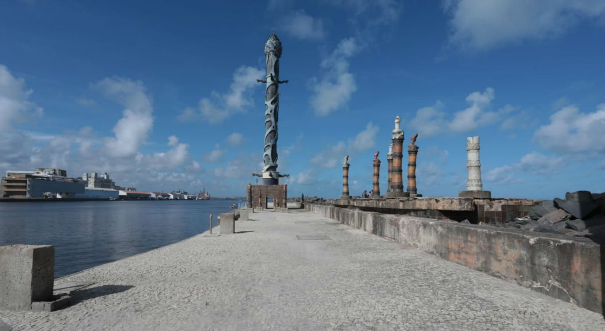

Parque de Esculturas de Francisco Brennand
O Parque de Esculturas de Francisco Brennand é um dos lugares turísticos em Recife que também chama atenção: um conjunto de obras do artista plástico pernambucano Francisco Brennand, instalado em um recife artificial na orla do Marco Zero.
Rua do Bom Jesus
A Rua do Bom Jesus é uma das mais antigas e charmosas de Recife, no bairro do Recife também, com casarões coloridos que datam do século XVII. Foi considerada a 3ª rua mais bonita do mundo pelo Architectural Digest.